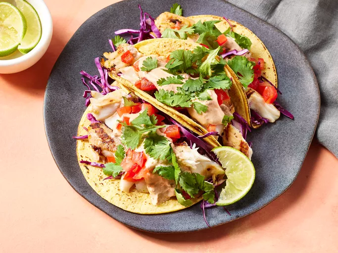

Grilled Fish Tacos with Chipotle-Lime Dressing

These grilled fish tacos are made with marinated fish fillets and topped with a spicy chipotle-lime dressing. Choose toppings to suit your taste, or include typical accompaniments such as salsa fresca, cabbage, a squeeze of lime juice, and chopped cilantro.
Ingredients
Marinated Fish:
- 1/4 cup extra virgin olive oil
- 2 tablespoons distilled white vinegar
- 2 tablespoons fresh lime juice
- 2 teaspoons lime zest
- 2 cloves garlic, minced
- 1 1/2 teaspoons honey
- 1 teaspoon seafood seasoning, such as Old Bay
- 1 teaspoon hot pepper sauce, or to taste
- 1/2 teaspoon cumin
- 1/2 teaspoon chili powder
- 1/2 teaspoon ground black pepper
- 1 pound tilapia fillets, cut into chunks
Dressing:
- 1 (8 ounce) container light sour cream
- 1/2 cup adobo sauce from chipotle peppers
- 2 tablespoons fresh lime juice
- 2 teaspoons lime zest
- 1/2 teaspoon seafood seasoning, such as Old Bay
- 1/4 teaspoon cumin
- 1/4 teaspoon chili powder
- salt and pepper to taste
Assembly:
- 1 (10 ounce) package tortillas
- 3 ripe tomatoes, seeded and diced
- 1 small head cabbage, cored and shredded
- 1 bunch cilantro, chopped
- 2 limes, cut in wedges
Directions
- Gather all ingredients.
- Whisk olive oil, vinegar, lime juice, lime zest, garlic, honey, seafood seasoning, hot pepper sauce, cumin, chili powder, and black pepper together in a bowl until blended.
- Place tilapia in a shallow dish and pour the marinade over the fish; cover the dish with plastic wrap and refrigerate for 6 to 8 hours.
- Make the dressing: Combine sour cream and adobo sauce in a bowl. Stir in lime juice, lime zest, seafood seasoning, cumin, and chili powder. Add salt and pepper to taste. Cover and refrigerate until needed.
- Preheat an outdoor grill for high heat and lightly oil the grate. Set the grate 4 inches from the heat.
- Remove fish from the marinade, drain off any excess and discard the marinade. Grill fish pieces until easily flaked with a fork, turning once, about 9 minutes.
- Assemble tacos: Place fish pieces in the center of tortillas with desired amounts of tomatoes, cabbage, and cilantro; drizzle with dressing.
- To serve, roll up tortillas around fillings, and garnish with lime wedges.
Home